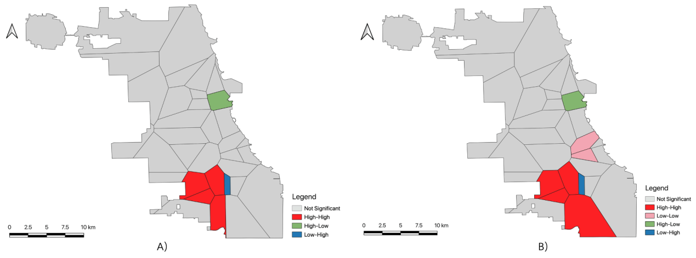

Abstract
Urban construction has accelerated the deterioration of the urban sound environment, which has constrained urban development and harmed people’s health.
This study aims to explore the spatiotemporal patterns of environmental sound and determine the influencing factors on the spatial differentiation of sound, thus supporting sustainable urban planning and decision-making. Fine-grained sound data are used in most urban sound-related research, but such data are difficult to obtain. For this problem, this study analyzed sound trends using Array of Things (AoT) sensing data. Additionally, this study explored the influences on the spatial differentiation of sound using GeoDetector (version number: 1.0-4), thus addressing the limitation of previous studies that neglected to explore the influences on spatial heterogeneity. Our experimental results showed that sound levels in different areas of Chicago fluctuated irregularly over time. During the morning peak on weekdays: the four southern areas of Chicago have a high–high sound gathering mode, and the remaining areas are mostly randomly distributed; the sound level of a certain area has a significant negative correlation with population density, park area, and density of bike route; park area and population density are the main factors affecting the spatial heterogeneity of Chicago’s sound; and population density and park area play an essential role in factor interaction.
This study has some theoretical significance and practical value. Residents can choose areas with lower noise for leisure activities according to the noise map of this study. While planning urban development, urban planners should pay attention to the single and interactive effects of factors in the city, such as parks, road network structures, and points of interest, on the urban sound environment. Researchers can build on this study to conduct studies on larger time scales.
Research background
Noise pollution has attracted widespread concern from all over the world and from all walks of life and has recently been the subject of much discussion and research among scholars. With the acceleration of urbanization and motorization, the environmental pressure brought by urban noise pollution is rising. Noise pollution has a remarkable negative impact on human health, such as hearing loss, mental health, sleep disorder, cardiovascular diseases, hypertension, and obesity. In addition, noise can also adversely affect the reproduction and distribution of animals. Therefore, it is essential to assess and analyse urban noise to support noise management.
The Array of Things (AoT, see https://arrayofthings.github.io/) project is a smart city measurement project designed to build city-scale sensor networks for understanding cities and urban life. The AoT project deployed nodes with multiple sensors and cameras in the city of Chicago to collect near-real-time, location-based data on urban environments, infrastructure, and activities. The dataset provided by the AoT has been widely used in various studies. However, the results of our literature search indicate that there are few studies on the sound data provided by the AoT at present.
Taking Chicago as the study area, we generated the noise maps of Chicago in the morning and evening peak on both weekdays and weekends based on the Thiessen polygon and the geographic information system. Using the statistical method of spatial correlation analysis and GeoDetector, we studied the spatiotemporal distribution characteristics of Chicago’s sound. In addition, we discussed the impacts of seven factors and the interaction between these factors on the spatial variation of Chicago’s sound. The factors include the population density (PD), park area (PA), density of the road network (DRN), density of the sidewalk (DS), density of bike routes (DBR), number of hospitals (NH), and number of fire stations (NFS).
Research results
(1)Noise Level of Different Nodes
We can know from Figure 5 that the noise level of a node was generally much higher than that of other nodes compared with the other 34 nodes after analysing the noise trend of each node within the week. The common characteristic of these 35 nodes is that the noise level fluctuates irregularly over time.
Figure 5. Noise level of (A) node 001e0610bc10; (B) node 001e06117b44; (C) node 001e0611441e; (D) node 001e06118509.
(2)Statistics of Noise Level on Weekdays and Weekends
It can be seen from Table 5 that the average noise level in the morning peak on weekdays is higher than that on weekends. According to the World Health Organization’s Community Noise Guidelines, an average noise level of 55.0 dB would be troublesome; however, the average noise level in Chicago during the morning and evening peaks is over 59.0 dB, indicating some impact on Chicago residents. Secondly, the maximum noise level in the morning and evening peaks on weekdays and weekends exceeds 99.0 dB. According to World Health Organization guidelines, hearing damage may occur when the maximum noise level approaches 110.0 dB. Furthermore, the mean values of sound levels are greater than the median in different time groups. Although the average value of two for the evening peak sound conditions on weekdays and weekends is the same, the noise in the evening peak varies significantly on weekends. In addition, the average noise level in the evening peak on weekdays and weekends is slightly higher than that of the morning peak, which may be inseparable from the entertainment that people have at the end of the day.
Table 5. Sound statistics in different time groups.
(3)Noise Maps on Weekdays and Weekends
It can be known from the noise maps that whether it is the morning peak and evening peak on weekday or on weekends, and the noise level in most areas of Chicago is between 55.0 dB and 60.0 dB, few areas is between 60.0 dB and 65.0 dB, and only one area exceeds 85.0 dB. In addition, comparing Figure 7 A) with B), we can find that the overall noise level of the morning peak on weekdays is not much different from the overall noise level of the morning peak on weekends. After comparing Figure 7 C) and D), we can see that the noise level in the evening peak on weekdays is slightly lower than that in the evening peak on weekends.
Figure 7. Noise level maps at A) morning peak on weekdays; B) morning peak on weekends; C) evening peak on weekdays and D) evening peak on weekends (unit: dB).
(4)Spatiotemporal Trend of Noise
Figure 9 reveals a global Moran scatter plot of Chicago's noise for different time groups, and the sound level is used to represent the noise level. The Moran statistic for the morning peak on weekdays is 0.106, and the p-value is less than 0.05, and that for the evening peak on weekdays is 0.068, and the p-value is less than 0.05, indicating that the spatial autocorrelation of Chicago's noise is statistical for two-time groups. We may observe that the 4 southern areas of Chicago have a high-high sound gathering mode, and the remaining areas are mostly randomly distributed during the morning peak on weekdays (Figure 10). The difference from the morning peak on weekdays is that the 2 eastern regions of Chicago present a low-low sound gathering mode. Chicago sounds have different aggregation patterns in different time periods, which may be related to the different behavioral activities of people in these periods.
Figure 9. Scatter plot of global Moran's I: A) morning peak on weekdays; B) evening peak on weekdays; C) morning peak on weekends; D) evening peak on weekends.
Figure 10. Clustering diagram of local Moran's I: A) morning peak on weekdays; B) evening peak on weekdays.
(5)Noise Influencing Factors Analysis Based on Bivariate Moran Index
Taking the morning peak on weekdays as an example, we examined the impact of PD, PA, DRN, DS, DBR, NH, and NFS on the sound environment through the bivariate Moran's I. We discovered that noise level in an area during the weekdays' morning peak was negatively correlated with the area's PD, PA, and DBR, and the correlation coefficient were 0.15 (p < 0.01), 0.18 (p < 0.01) and 0.10 (p < 0.1), respectively (Table 6). According to the analysis, we can know that: (1) the larger the population, the lower the noise. This may be connected to the location of people's activities, such as office buildings and residential buildings, and even if the population is large, there will be no excessive noise in general. (2) Areas with large park boundaries may have lower noise levels, and as parks continue to expand, noise levels decrease. This could be the case since the natural landscape features of the park, such as vegetation, water bodies, might affect the sound environment, and these impacts will increase along with the rising land area. This finding is identical to existing results. (3) With the increase of bike routes, the noise will be reduced. Cyclists are more likely to be exposed to noise in the short term, but with the increase of bike routes and the substitution of bicycles for cars and motorcycles, noise pollution will gradually decrease, and the noise pollution suffered by cyclists will also decrease. Furthermore, we also found that there are no statistically significant correlations between the DS, DRN, NH, NFS and the noise level, which may be because the impact of these factors on noise is an interactive and complex process.
Table 6. Results of spatial correlation analysis.
(6)Analysis of Noise Influencing Factors based on GeoDetector
We define spatial heterogeneity as the difference in sound magnitude between diverse regions of Chicago. The results of the factor detector are sorted by q value as follows: PA (0.2617) > PD (0.1975) > DS (0.1581) > DRN (0.1558) > DBR (0.1402) > NFS (0.0970) > NH (0.0722). Of the seven factors, NH and NFS have a small effect on sound levels, PA has the largest effect, and PD is a close second, indicating that PA and PD are the most important drivers of sound levels in Chicago. Due to the reduction effect of vegetation and lakes on sound in the park, the sound decreases with the increase of the park area. This further illustrates that the most central way to improve the future sound environment in Chicago is to increase vegetation cover and lake area. In addition, population distribution has an important effect on the spatial differentiation of sound levels. DS, DRN, and DBR also have a large effect on sound levels, suggesting that an important aspect of improving Chicago's sound environment is proper planning of the road network. The influence of NFS and NH on Chicago sounds are relatively small, which may be because hospitals have the need to keep quiet, while fire stations produce a single sound.
We can know from Table 7 that the interaction of the seven factors is enhanced, including bi-factor enhancement and nonlinear enhancement, and there are no factors that work independently of each other, which shows that the spatial differentiation pattern of the Chicago sounds is not controlled by a single factor, but is the result of the joint action of multiple factors. The interaction between PD and PA (0.7353), as well as PA and DBR (0.6399), are significant in the interaction between the two factors, indicating that the population distribution should be intervened while the expansion of Chicago parks and investment in bike routes should be increased to jointly improve the noise distribution in Chicago. The interaction between NH and DRN (0.1740), as well as NH and NFS (0.1390), are small in the interaction between the two factors.
Table 7. The results of the interaction detector.
Research conclusions
Since the GeoDetector used in this study can detect the real interaction between two factors, it is not limited to the multiplicative relationship, and the principle of GeoDetector ensures that it is immune to multi-independent variable collinearity, it achieves a more effective and comprehensive analysis. Taking the morning peak on weekdays as an example, we found that:
(1)There is a statistically significant positive correlation between noise in Chicago during this time.
(2)Population density, park area, and density of bike routes were significantly negatively correlated with sound level.
(3)Park area and population density are the two most crucial controlling factors for the spatial differentiation of sounds in Chicago.
(4)There is an interaction enhancement effect between each factor, and the enhancement effects are more obvious between population density and park area as well as park area and density of bike routes.
The results show that a good analysis result can also be achieved using AoT data. This study can provide a reference for Chicago’s policy making and help Chicago to develop healthily and efficiently.